|
|
| cnidarians text index | photo index |
| Phylum Cnidaria > Class Anthozoa > Subclass Alcyonaria/Octocorallia > Order Helioporacea |
| Blue
coral Heliopora coerulea Family Helioporidae updated Dec 2024
Where seen? These living fossils are commonly seen on our Southern shores, sometimes forming many large colonies. Found among hard corals. What are blue corals? Blue corals belong to Phylum Cnidaria. Although they produce a hard skeleton, they are NOT hard corals and are more closely related to soft corals. Blue corals are the only members of the Order Helioporacea, Family Helioporidae. They are also the only members of the soft corals (Subclass Alcyonaria) that contributes to reef-building, like hard corals do. Living fossil: Blue corals are considered living relicts of fossil species known from more than 100 million years ago. Most other corals have an evolutionary age of only several hundred thousand years. Blue corals used to be dominant before the last Ice Age when the seas were warmer. They are now only found in warm tropical waters. |
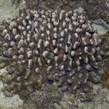 Pulau Jong, Jul 07 |
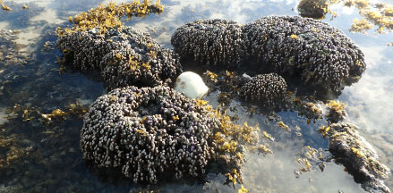 During mass coral bleaching, a small bleaching coral is seen in the middle of large Blue coral colonies that appear normal. Terumbu Pempang Tengah, Jul 16 |
| Features: Blue corals are confusing.
Firstly, they are often brown and don't appear blue at all. Secondly,
although they have a hard skeleton, they are not grouped with other
hard corals. Colonies 15-30cm, polyps about 0.5cm. Their internal skeletons are blue, hence their common name. The blue colour is due to the iron salts that are incorporated into their skeletons. On the outside, they are usually brown because the thin layer of brownish living tissue that covers the outer surface of the skeleton. The skeletons are made of a different kind of calcium carbonate (fibro-crystalline argonite) that is more brittle than that of true hard corals that belong to Subclass Sclerectinia. Inside the skeleton are tubes, where the long, thin polyps are found, and a system of canals. Blue coral colonies are usually boulder shaped with knobs. They may also have thick leaf-like forms or columns, and may even be encrusting or plate-like. Tiny polyps (about 0.5cm) have 8 tentacles with fine branches like other soft corals (True hard coral polyps have smooth tentacles in multiples of six). The polyps stick out of tiny holes (0.2cm) in the skeleton. They may be white or beige. |
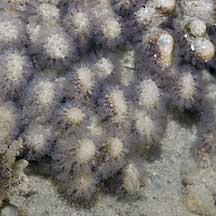 With polyps extended. Pulau Semakau, Mar 05 |
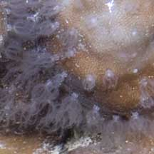 Polyps with branched tentacles more typical of soft than hard corals. Beting Bemban Besar, May 11 |
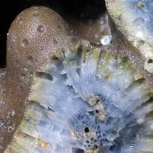 A look inside a broken blue coral showing the blue internal skeleton and tiny channels when the polyps are. Pulau Hantu, Apr 06 |
| What do they eat? Blue
coral polyps harbour microscopic, single-celled symbiotic algae (zooxanthellae)
within their bodies. The algae undergo photosynthesis to produce food
from sunlight. The food produced is shared with the host, which in
return provides the algae with shelter and minerals. It is the zooxanthellae
that give the animals their brownish colour.
However, during mass coral bleaching, while other hard corals are bleaching in numbers, we usually don't see Blue corals undergoing the same kind of drastic colour change. Blue food: This coral is preyed upon by a small nudibranch Doridomorpha gardineri that very closely resembles the surface of the coral. Status and threats: As at 2024, it is assessed not to be approaching the criteria for being listed among the threatened animals in Singapore. |
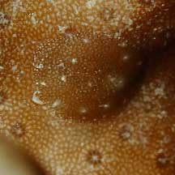 Doridomorpha gardineri Terumbu Bemban, May 21 Photo shared by Toh Chay Hoon on facebook. |
| Blue corals on Singapore shores |
On wildsingapore
flickr
|
| Other sightings on Singapore shores |
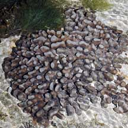 Pulau Biola, Dec 09 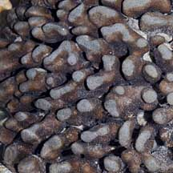 |
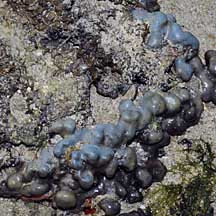 Terumbu Salu, Jan 10 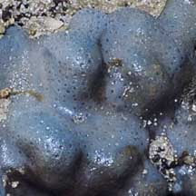 |
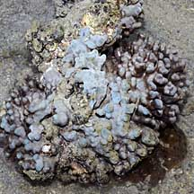 Terumbu Berkas, Jan 10 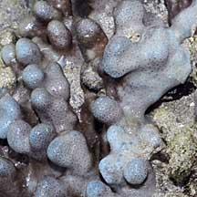 |
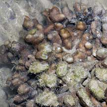 Pulau Senang, Jun 10 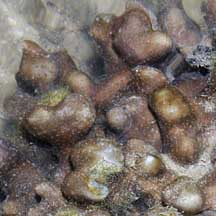 |
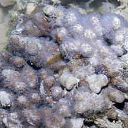 Pulau Salu, Aug 10 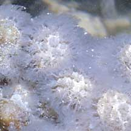 |
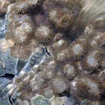 Pulau Pawai, Dec 09 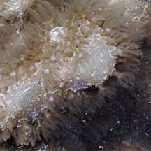 |
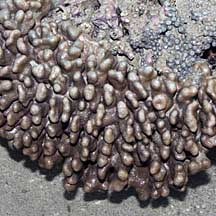 Pulau Berkas, May 10 |
| Family
Helioporidae recorded for Singapore from Checklist of Cnidaria (non-Sclerectinia) Species with their Category of Threat Status for Singapore by Yap Wei Liang Nicholas, Oh Ren Min, Iffah Iesa in G.W.H. Davidson, J.W.M. Gan, D. Huang, W.S. Hwang, S.K.Y. Lum, D.C.J. Yeo, May 2024. The Singapore Red Data Book: Threatened plants and animals of Singapore. 3rd edition. National Parks Board. 663 pp.
|
| Acknowledgement Grateful thanks to Toh Chay Hoon for finding and identifying nudibranchs that eat these corals. References
|